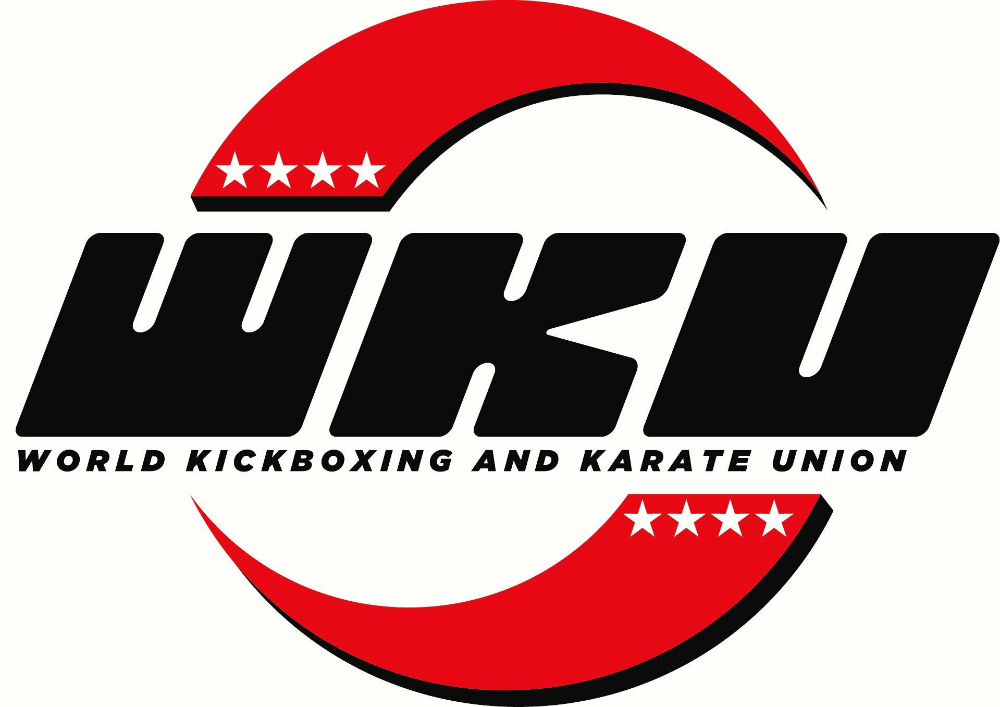
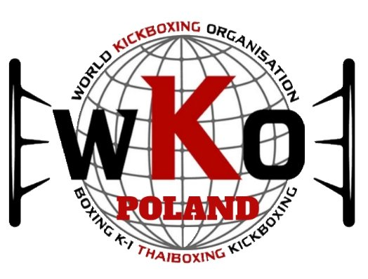
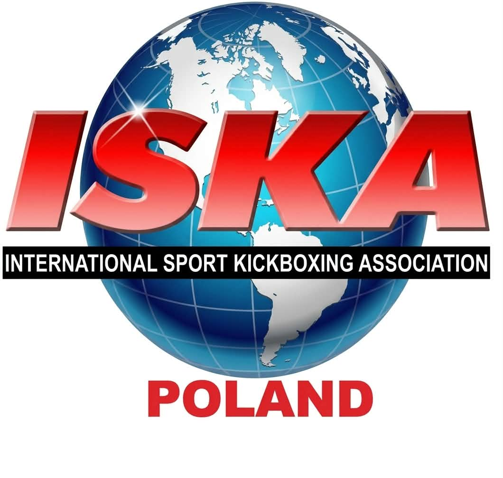
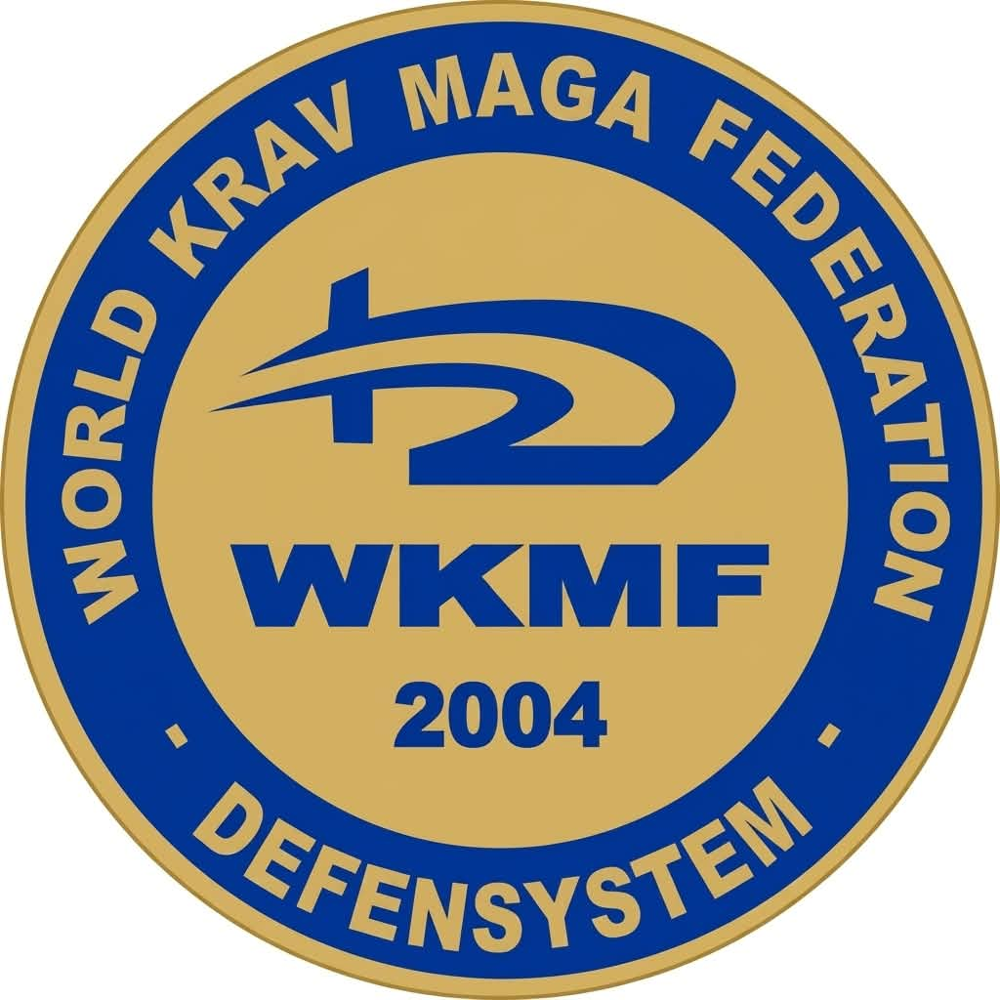

WKU WORLD – WORLD KICKBOXING AND KARATE UNION

World Kickboxing and Karate Union (WKU World) to jedna z największych międzynarodowych
organizacji zrzeszających zawodników, trenerów, kluby i organizacje działające w obszarze
kickboxingu, karate oraz innych sportów i sztuk walki.
Korzenie organizacji sięgają lat 70. XX wieku i okresu narodzin full contact karate oraz
współczesnego kickboxingu. WKU World funkcjonuje obecnie wspólnie z GCO – Global Combat
Organisation jako rozbudowana międzynarodowa struktura sportowa obejmująca zarówno sport
amatorski, jak i zawodowy.
Według oficjalnych danych WKU World organizacja posiada przedstawicielstwa i struktury w ponad
90 krajach świata, skupiając zawodników w różnych grupach wiekowych – od dzieci i młodzieży,
przez seniorów, aż po weteranów.
Międzynarodowa rywalizacja
Jednym z najważniejszych obszarów działalności WKU World jest organizacja i sankcjonowanie
międzynarodowych zawodów sportowych.
W kalendarzu organizacji znajdują się m.in.:
- Mistrzostwa Świata WKU World,
- mistrzostwa kontynentalne, w tym Mistrzostwa Europy,
- mistrzostwa i turnieje krajowe,
- międzynarodowe puchary i turnieje otwarte,
- zawodowe gale Professional Fight Night,
- seminaria sportowe i szkoleniowe,
- szkolenia i certyfikacje trenerów oraz sędziów.
Rywalizacja WKU obejmuje szeroki zakres sportów i sztuk walki, w tym Point Fighting, Light
Contact, Kick Light, Full Contact, K1, Karate Kumite, Karate Kyokushin oraz Forms.
GCO – Global Combat Organisation
WKU World funkcjonuje pod strukturą GCO – Global Combat Organisation, tworząc międzynarodowy
system zrzeszający kluby, trenerów, zawodników oraz przedstawicieli poszczególnych państw.
Jednym z ważnych elementów tego systemu jest międzynarodowa baza zawodników i członków,
pozwalająca na prowadzenie profili sportowych oraz rejestrowanie m.in. członkostwa, stopni i
aktywności zawodniczej.
WKU/GCO prowadzi również światowe rankingi zawodników, system stopni szkoleniowych oraz
międzynarodowe regulaminy rywalizacji sportowej.
WKU World w Polsce – współpraca z PSBO
Polskie Stowarzyszenie Bezpieczeństwa Osobistego współpracuje bezpośrednio z WKU World i GCO
przy rozwoju struktur organizacji na terenie Polski.
Prezes Polskiego Stowarzyszenia Bezpieczeństwa Osobistego Jacek Błasiński pełni funkcję
oficjalnego i jedynego przedstawiciela WKU World/GCO w Polsce, odpowiadając za rozwój polskich
struktur organizacji, współpracę z klubami oraz budowę reprezentacji Polski WKU.
W ramach współpracy PSBO rozwija w Polsce sieć klubów i zawodników WKU, umożliwiając polskim
sportowcom udział w oficjalnym międzynarodowym systemie organizacji oraz rywalizację podczas
zawodów WKU w Polsce i za granicą.
Współpraca obejmuje m.in. zrzeszanie klubów, licencjonowanie zawodników, tworzenie reprezentacji
Polski, organizację wyjazdów na zawody międzynarodowe, rozwój kadry trenerskiej i sędziowskiej
oraz reprezentowanie polskiego środowiska sportów walki w strukturach WKU World/GCO.
Oficjalna strona organizacji: WKU World – World Kickboxing and Karate Union
WKO – WORLD KICKBOXING ORGANISATION

World Kickboxing Organisation (WKO) to międzynarodowa organizacja sportowa zarządzająca i
rozwijająca rywalizację w kickboxingu oraz innych sportach walki, zarówno na poziomie
amatorskim, jak i zawodowym.
Organizacja została utworzona w 2017 roku z inicjatywy doświadczonych przedstawicieli środowiska
sportów walki. Jej założeniem było stworzenie nowoczesnej, przejrzystej i skoncentrowanej na
zawodnikach struktury, która łączy tradycję kickboxingu z aktualnymi potrzebami zawodników,
trenerów, klubów i promotorów.
Prezydentem WKO World jest Jon Green, który odpowiada za rozwój organizacji oraz jej
międzynarodowych struktur.
WKO działa obecnie na skalę światową. Według oficjalnych danych organizacji w zawodach i systemie
WKO od 2017 roku uczestniczyło już ponad 10 000 zawodników, tysiące klubów i teamów
reprezentujących ponad 70 krajów, a w bazie wyników znajduje się ponad 14 000 zdobytych tytułów
mistrzowskich.
Sport amatorski i zawodowy
Jedną z najważniejszych cech WKO jest połączenie sportu amatorskiego z możliwością dalszego
rozwoju zawodnika w kierunku rywalizacji ringowej i profesjonalnej.
Organizacja tworzy ścieżkę rozwoju prowadzącą od pierwszych startów turniejowych, przez zawody
krajowe i międzynarodowe, aż do profesjonalnych walk i tytułów mistrzowskich.
WKO sankcjonuje zarówno Tatami Sports, jak i Ring Sports, współpracując przy tym z klubami,
trenerami i promotorami organizującymi wydarzenia sportowe na różnych poziomach
zaawansowania.
W rywalizacji WKO znajdują się m.in. Point Fighting, Light Contact, Full Contact Kickboxing,
Low Kick, K-1 Rules, Thai Boxing oraz inne formuły sportów walki funkcjonujące w ramach
zawodów WKO.
Mistrzostwa świata i międzynarodowa rywalizacja
WKO organizuje rozbudowany cykl zawodów sportowych, obejmujący wydarzenia od poziomu krajowego
aż po najważniejsze imprezy międzynarodowe.
W kalendarzu organizacji znajdują się m.in. WKO Open World Championships, WKO European Open
Championships, WKO World Grand Prix, mistrzostwa krajowe, mistrzostwa Ring Sports, turnieje
British Open, English Open i 6 Nations, międzynarodowe turnieje otwarte oraz profesjonalne
gale i walki o tytuły WKO.
WKO Fight-Rec – międzynarodowa baza zawodników
WKO rozwija również własny system WKO Fight-Rec, którego zadaniem jest dokumentowanie
rzeczywistego doświadczenia i historii startów zawodników.
Baza tworzona jest na podstawie oficjalnych wyników zawodów WKO od 2018 roku i służy m.in. do
weryfikowania doświadczenia zawodników oraz bardziej sprawiedliwego i bezpiecznego zestawiania
walk.
System obejmuje obecnie wyniki ponad 10 000 zawodników, tysiące klubów i teamów z ponad 70
krajów oraz dane dotyczące ponad 14 000 zdobytych tytułów mistrzowskich.
System szkoleniowy i stopnie w kickboxingu
WKO prowadzi również własny, ujednolicony międzynarodowy system szkoleniowy i egzaminacyjny
kickboxingu.
Oficjalny program szkoleniowy został opracowany przez Prezydenta WKO World Jona Greena, a jego
pierwsza wersja została wprowadzona już w 1999 roku, jeszcze przed utworzeniem obecnej struktury
World Kickboxing Organisation.
System obejmuje stopnie KYU oraz DAN, dzięki czemu zawodnicy mogą rozwijać się nie tylko poprzez
starty sportowe, ale również poprzez formalną ścieżkę szkoleniową.
Zarejestrowane kluby WKO mogą prowadzić szkolenie i egzaminy zgodnie z oficjalnym programem
organizacji, natomiast wyższe stopnie mistrzowskie podlegają regulacjom i procedurom WKO.
WKO w Polsce – współpraca z PSBO
Polskie Stowarzyszenie Bezpieczeństwa Osobistego współpracuje z World Kickboxing Organisation
przy rozwoju struktur WKO na terenie Polski.
Prezes Polskiego Stowarzyszenia Bezpieczeństwa Osobistego Jacek Błasiński pełni funkcję Dyrektora
WKO w Polsce, odpowiadając za rozwój organizacji, współpracę z klubami i trenerami oraz
tworzenie możliwości startów i rozwoju dla polskich zawodników.
Jednocześnie pełni funkcję Trenera Kadry Polski WKO, prowadząc reprezentację podczas
międzynarodowych zawodów organizacji.
W ramach współpracy PSBO rozwija sieć klubów i zawodników WKO w Polsce, prowadzi system licencji
i stopni sportowych oraz umożliwia zawodnikom udział w krajowych i międzynarodowych wydarzeniach
WKO.
Współpraca obejmuje m.in. zrzeszanie i licencjonowanie klubów oraz zawodników, egzaminy na
stopnie
KYU i DAN, rozwój kadry trenerskiej, budowę reprezentacji Polski, organizację wyjazdów na
Mistrzostwa Europy i Mistrzostwa Świata oraz umożliwianie polskim zawodnikom budowania
międzynarodowego doświadczenia sportowego.
Celem współpracy PSBO i WKO jest stworzenie polskim klubom, trenerom i zawodnikom otwartej
ścieżki rozwoju – od pierwszego treningu i pierwszego stopnia szkoleniowego, przez rywalizację
krajową i międzynarodową, aż po Mistrzostwa Europy, Mistrzostwa Świata i sport zawodowy.
Oficjalna strona organizacji: World Kickboxing Organisation –
WKO
ISKA – INTERNATIONAL SPORT KICKBOXING ASSOCIATION

ISKA (International Sport Kickboxing Association) to jedna z najbardziej rozpoznawalnych
międzynarodowych organizacji zajmujących się sankcjonowaniem, regulowaniem i rozwojem
kickboxingu, karate, MMA oraz innych sportów i sztuk walki.
Organizacja powstała 16 lipca 1986 roku w Stanach Zjednoczonych. Pierwotnie funkcjonowała jako
International Sport Karate Association, co wynikało z historii amerykańskiego kickboxingu
rozwijającego się z Full Contact Karate. Wraz z międzynarodowym rozwojem kickboxingu organizacja
zaczęła być globalnie rozpoznawana również jako International Sport Kickboxing Association.
ISKA została utworzona przez grupę czołowych amerykańskich promotorów i działaczy sportowych po
zakończeniu działalności Professional Karate Association (PKA). Wśród pierwszych dyrektorów
organizacji znaleźli się Mike Sawyer, Karyn Turner, Tony Thompson, John Worley oraz Scott Coker.
Już 9 października 1986 roku rozpoczęto budowę europejskich struktur ISKA, a organizacja zaczęła
szybko rozwijać działalność poza Stanami Zjednoczonymi.
Na początku lat 90. ISKA posiadała przedstawicieli w ponad 60 krajach świata. Obecnie
Prezydentem Światowym jest Cory Schafer.
Ponad 40 lat historii sportów walki
Historia ISKA jest silnie związana z rozwojem profesjonalnego kickboxingu. Na przestrzeni dekad
organizacja sankcjonowała walki największych zawodników swoich czasów, a wydarzenia ISKA
transmitowane były przez największe światowe stacje i platformy telewizyjne.
W latach 90. na wydarzeniach ISKA walczyły takie legendy kickboxingu jak Rob Kaman, Ernesto
Hoost, Rick Roufus, Stan Longinidis, Dida Diafat czy Peter Cunningham.
Sport amatorski i zawodowy
Jedną z najważniejszych cech ISKA jest działalność zarówno w sporcie amatorskim, jak i
profesjonalnym. ISKA sankcjonuje zawodowe gale, walki i tytuły mistrzowskie, a jednocześnie
rozwija międzynarodową rywalizację amatorską, umożliwiając zawodnikom zdobywanie doświadczenia
od pierwszych turniejów aż po Mistrzostwa Europy i Świata.
Organizacja prowadzi również szkolenia i certyfikację sędziów oraz rozwija międzynarodowe
regulaminy mające zapewniać zawodnikom bezpieczne i uczciwe warunki rywalizacji.
Ponad 20 dyscyplin i formuł rywalizacji
ISKA sankcjonuje i reguluje rywalizację w ponad 20 różnych dyscyplinach i formułach sportów
oraz sztuk walki, obejmujących m.in. Full Contact, Low Kick, K-1 Rules, Semi-Contact / Point
Fighting, Light Contact, Muay Thai, MMA, grappling, forms, konkurencje z bronią, drużynowe i
breaking.
Mistrzostwa Świata ISKA
Jednym z najważniejszych elementów działalności organizacji są Mistrzostwa Świata ISKA, podczas
których zawodnicy reprezentują swoje państwa w licznych konkurencjach sportów i sztuk walki.
ISKA organizuje również mistrzostwa kontynentalne, krajowe i międzynarodowe turnieje oraz
sankcjonuje profesjonalne walki o tytuły mistrzowskie.
ISKA Polska
Oficjalną krajową strukturą organizacji jest ISKA Polska. Funkcję National Director Poland pełni
Dariusz Wiśniewski, oficjalnie wymieniony w światowych strukturach ISKA jako krajowy dyrektor
organizacji w Polsce.
ISKA Polska odpowiada za rozwój organizacji na terenie kraju, współpracę z zawodnikami,
trenerami i klubami, rozwój Kadry Polski oraz reprezentowanie polskiego środowiska podczas
międzynarodowych wydarzeń ISKA.
Strategiczne partnerstwo PSBO × ISKA Polska
Polskie Stowarzyszenie Bezpieczeństwa Osobistego jest Strategicznym Partnerem ISKA Polska.
Oficjalne rozpoczęcie współpracy zostało potwierdzone podczas zgrupowania Kadry Polski ISKA w
Mikoszewie, podczas spotkania Prezesa PSBO Jacka Błasińskiego z National Director ISKA Poland
Dariuszem Wiśniewskim.
Partnerstwo ma charakter długofalowy i obejmuje wspólny rozwój projektów sportowych,
szkoleniowych oraz możliwości dla zawodników i klubów współpracujących z PSBO.
W ramach rozpoczętej współpracy Prezes PSBO Jacek Błasiński został mianowany Koordynatorem
Rozwoju ISKA w województwach lubelskim i mazowieckim oraz Trenerem Kadry Polski ISKA w
konkurencjach Point Fighting, Light Contact i Kata.
Co współpraca z ISKA Polska daje zawodnikom i klubom?
Strategiczne partnerstwo otwiera przed klubami i zawodnikami współpracującymi z PSBO kolejną
międzynarodową ścieżkę rozwoju. Obejmuje ona m.in. udział w Mistrzostwach Europy i Świata ISKA,
zgrupowaniach Kadry Polski ISKA, seminariach, obozach, projektach szkoleniowych oraz
rywalizację o tytuły i pasy ISKA.
Jednym z pierwszych dużych projektów realizowanych w ramach współpracy jest przygotowanie
zawodników do Mistrzostw Świata ISKA 2026 w Hiszpanii.
Współpraca oparta na doświadczeniu
Partnerstwo PSBO i ISKA Polska ma również fundament sportowy. Prezes PSBO Jacek Błasiński
reprezentował Polskę podczas Mistrzostw Świata ISKA w Irlandii w 2019 roku, zdobywając 4 tytuły
Mistrza Świata, 2 srebrne oraz 1 brązowy medal, osiągając najlepszy wynik medalowy reprezentacji
Polski podczas tych mistrzostw.
Dziś doświadczenie zdobywane wcześniej jako zawodnik wykorzystywane jest przy szkoleniu kolejnych
reprezentantów Polski i rozwijaniu współpracy pomiędzy PSBO a ISKA Polska.
Wspólnie otwieramy możliwości
Filozofią PSBO jest współpraca ponad podziałami organizacyjnymi. Nie budujemy podziałów pomiędzy
federacjami. Budujemy możliwości dla zawodników.
Dlatego współpraca z ISKA Polska stanowi kolejny element międzynarodowej sieci partnerów PSBO,
dzięki której nasi zawodnicy, trenerzy i kluby mogą wybierać własną drogę rozwoju, zdobywać
doświadczenie w różnych organizacjach oraz reprezentować Polskę podczas najważniejszych
międzynarodowych wydarzeń sportów walki.
Oficjalna strona światowej organizacji: ISKA World
Headquarters
Partner PSBO: ISKA Polska
WKMF – WORLD KRAV MAGA FEDERATION

World Krav Maga Federation (WKMF) to międzynarodowa organizacja zajmująca się rozwojem,
promocją i standaryzacją szkolenia Krav Maga oraz systemów samoobrony przeznaczonych zarówno
dla osób cywilnych, jak i przedstawicieli sektora bezpieczeństwa.
Organizacja została założona w maju 2004 roku przez grupę europejskich ekspertów Krav Maga:
Alessandro Del Pia z Włoch oraz Thierry'ego Viatoura, Jean-Michela Lerho i Alexandre'a
Vanderlindena z Belgii.
Jednym z głównych twórców i wieloletnich liderów organizacji jest Alessandro Del Pia, który
rozwija i promuje Krav Maga oraz systemy samoobrony od końca lat 90.
WKMF rozwinęła z czasem międzynarodową sieć instruktorów, szkół i przedstawicielstw. Według
oficjalnych struktur organizacji WKMF jest obecna w ponad 75 krajach świata.
Krav Maga i realna samoobrona
W odróżnieniu od organizacji skupiających swoją działalność przede wszystkim na rywalizacji
sportowej, działalność WKMF koncentruje się na Krav Maga, samoobronie oraz przygotowaniu
człowieka do działania w sytuacjach realnego zagrożenia.
Krav Maga jest systemem samoobrony rozwijanym z myślą o prostych, możliwych do zastosowania pod
presją rozwiązaniach.
Civilian & Professional Self Defense
Istotnym elementem działalności WKMF jest rozróżnienie pomiędzy szkoleniem przeznaczonym dla
osób cywilnych a specjalistycznym przygotowaniem dla osób zawodowo związanych z bezpieczeństwem.
System Civilian & Professional Self Defense pozwala rozwijać programy dostosowane do różnych
potrzeb i środowisk.
Międzynarodowa struktura WKMF
World Krav Maga Federation tworzy międzynarodową sieć przedstawicieli, dyrektorów technicznych,
instruktorów i organizacji współpracujących.
Organizacja rozwija działalność poprzez krajowe struktury odpowiedzialne za szkolenie
instruktorów,
organizowanie seminariów, prowadzenie egzaminów oraz rozwój Krav Maga w poszczególnych
państwach.
WKMF Poland
W 2026 roku rozpoczęto oficjalny rozwój struktur World Krav Maga Federation w Polsce. Decyzją
międzynarodowych władz WKMF Prezes Polskiego Stowarzyszenia Bezpieczeństwa Osobistego Jacek
Błasiński został oficjalnie mianowany President WKMF Poland oraz Technical Director Poland for
Krav Maga WKMF – Civilian & Professional Self Defense.
Nominacje zostały oficjalnie potwierdzone międzynarodowymi certyfikatami WKMF wystawionymi 16
czerwca 2026 roku w Rzymie we Włoszech. Jacek Błasiński otrzymał również certyfikację Master
WKMF – Civilian & Professional Self Defense.
Zakres odpowiedzialności WKMF Poland
Zgodnie z otrzymaną nominacją Prezes PSBO odpowiada za organizację, promocję i rozwój WKMF na
terenie Polski, w tym rozwój szkoleń przeznaczonych dla instruktorów i uczestników oraz
specjalizacji dotyczących osób cywilnych i przedstawicieli sektora bezpieczeństwa.
Jako Technical Director Poland odpowiada również za rozwój merytoryczny i techniczny systemu
Krav Maga WKMF – Civilian & Professional Self Defense w Polsce.
W ramach polskich struktur WKMF rozwijane będą m.in. szkolenia i kursy Krav Maga, programy
samoobrony dla osób cywilnych, programy Professional Self Defense, szkolenia i rozwój
instruktorów, egzaminy na stopnie szkoleniowe, seminaria krajowe i międzynarodowe, współpraca z
klubami i instruktorami, programy dotyczące bezpieczeństwa osobistego oraz wymiana wiedzy i
doświadczeń z zagranicznymi instruktorami WKMF.
WKMF Poland × PSBO
Rozwój WKMF Poland jest ściśle związany z działalnością Polskiego Stowarzyszenia Bezpieczeństwa
Osobistego. Połączenie międzynarodowych struktur World Krav Maga Federation z doświadczeniem i
działalnością PSBO pozwala rozwijać w Polsce programy, których celem jest nie tylko nauczanie
technik samoobrony, ale przede wszystkim kompleksowe przygotowanie człowieka do rozpoznawania,
unikania i właściwego reagowania na zagrożenia.
PSBO zamierza łączyć doświadczenie Krav Maga z wiedzą dotyczącą m.in. bezpieczeństwa osobistego,
psychologii zagrożeń, prewencji, aspektów prawnych, ochrony osób oraz działania w sytuacjach
stresowych.
Naszym celem jest tworzenie nowoczesnego systemu szkolenia opartego na praktyce, międzynarodowej
wymianie doświadczeń i ciągłym podnoszeniu standardów szkoleniowych.
Rozwój instruktorów i klubów w Polsce
Jednym z głównych kierunków rozwoju WKMF Poland będzie budowanie ogólnopolskiej sieci
instruktorów
i klubów zainteresowanych szkoleniem Krav Maga oraz samoobrony.
Współpraca z PSBO i WKMF Poland otwiera możliwość uczestnictwa w systemie szkoleń, seminariów i
egzaminów oraz rozwijania kwalifikacji w ramach międzynarodowych struktur World Krav Maga
Federation.
Wspólny cel – bezpieczeństwo
Współpraca PSBO z World Krav Maga Federation jest naturalnym rozwinięciem działalności Polskiego
Stowarzyszenia Bezpieczeństwa Osobistego. Sporty walki uczą rywalizacji. Samoobrona przygotowuje
do sytuacji, w której nie ma zasad, sędziego ani medalu.
Dlatego poprzez WKMF Poland chcemy rozwijać drugi filar działalności PSBO – obok sportu i
szkolenia zawodników tworzyć również profesjonalne programy poświęcone realnemu bezpieczeństwu,
samoobronie i przygotowaniu do działania w sytuacjach zagrożenia.
Oficjalna strona europejskiej struktury WKMF / Global Defender: WKMF /
Federkravmaga – Global Defender
World Krav Maga Federation – South America: WKMF South America